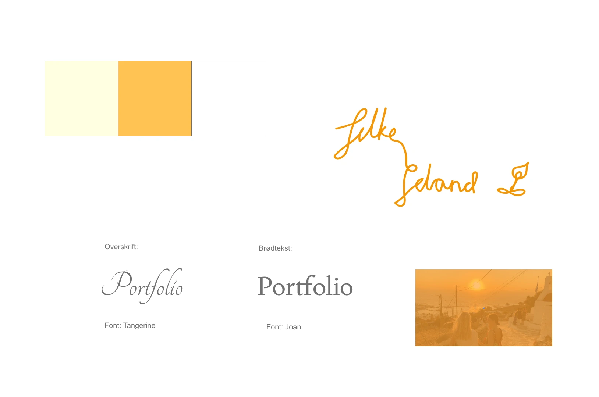
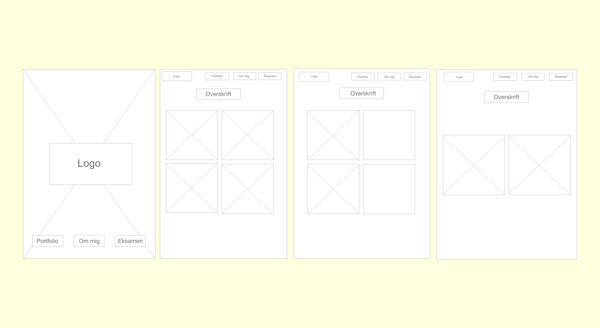

Portfolioeksamen
Styletile
Wireframes
Processen
Jeg startede med at lave et Word dokument hvor jeg skrev alt ned jeg skulle nå, så jeg havde overblik over hele processen. Jeg researchede og kiggede på diverse websites for at få inspiration. Så begyndte jeg på moodboard, styletile og wireframes og med udgangspunkt i det startede jeg med at tegne logo, lave former som jeg dannede til ikoner til hvert emne i Illustrator.
Jeg havde flere forskellige ideer til min forside og hvilken stilretning jeg skulle gå i, så jeg endte med en masse artboards i Illustrater med forskellige udkast til min forside. Jeg valgte den forside jeg synes passede bedst og fortsatte med at lave prototypen til min hjemmeside.
Det næste step i processen var at kode hjemmesiden. Jeg lavede html filer til hver side, to css filer, en layout-css og en generel-css og sidst men ikke mindst en JavaScript fil. Nu begyndte jeg ellers bare at kode ud fra prototyperne.
I slutspurten formaterede jeg mine billeder til webp, tjekkede om mine filer validerede, finpudsede detaljer og tjekkede for stavefejl.